下载安装Visual Studio 2019（如果已安装请跳过）
-
进入Visual Studio官方网站进行下载，选择合适的安装路径(路径中确保不能有中文)
-
安装Visual Studio 2019 Comunity版本()
-
下载我们所需的C++组件
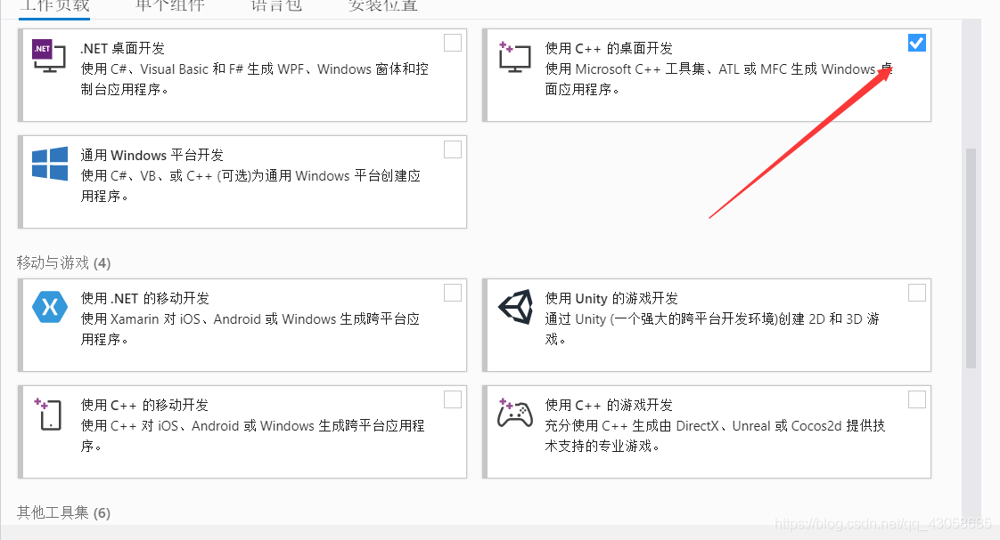
等待安装成功。。。
下载安装VisualGDB
-
关闭Visual Studio，双击运行VisualGDB-5.5r4.msi


-
直接选择Quick Installation，如果选择Common Installation也可，但需注意不要有中文路径
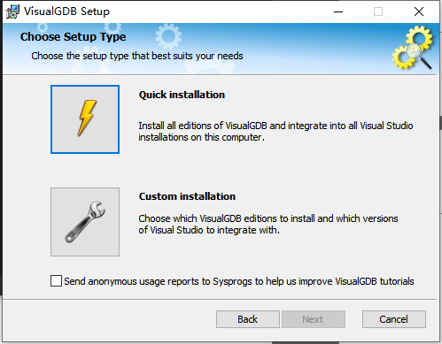


-
安装结束后进入Visual Studio 2019，点击帮助中About VisualGDB，可以发现GDB已经破解成功（注意千万不要更新，更新之后就无法破解，需要卸载GDB后重新安装）


-
首次启动时，请打开已有项目。如果需要重新创建新项目，需要指定工具链版本以及BSP（Board Support Package），实际上如果需要指定的版本当然可以，但为了兼容旧代码，这里直接打开已有项目，Visual GDB会自动下载配套的工具链：
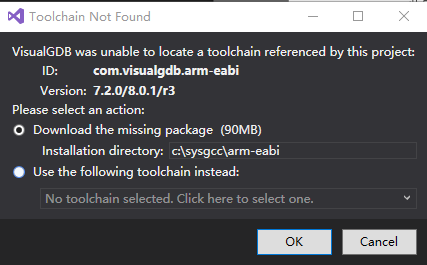
点击OK开始下载
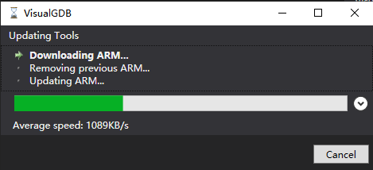
上述下载可能比较慢，如有需要可以开启全局代理，这里不过多赘述。
之后下载BSP，这也会自动匹配到stm32，版本为3.6。点击Download BSP即可

重新生成MSBuild文件，点击Yes即可
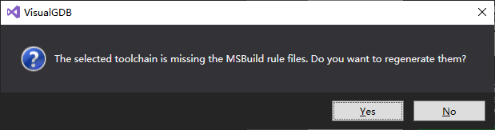
此时即可查看该工程，按Ctrl+Shift+B启动Build，稍等后显示项目生成成功即可。
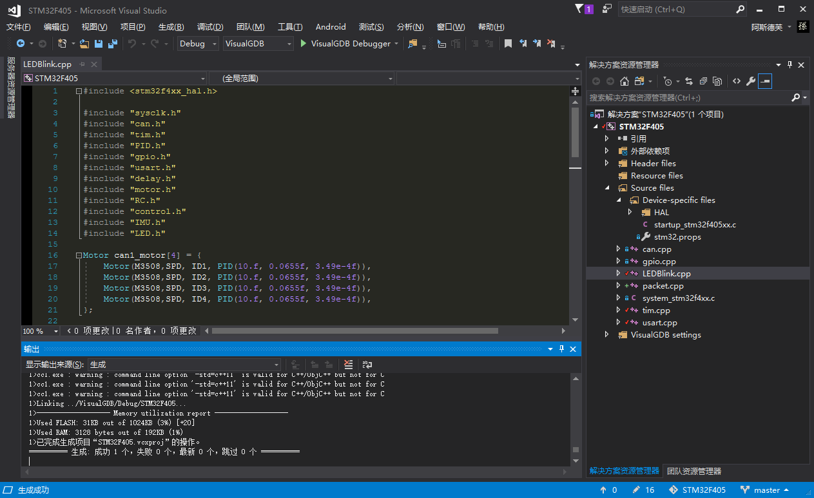
输出中也许会有红色的warning，不用理会。只要能生成成功就行。也可能会提示一些文件缺失，有可能是项目文件本身的问题
-
配置调试器，在解决方案资源管理器中，右键点击项目名，选择VisualGDB Project Properties.
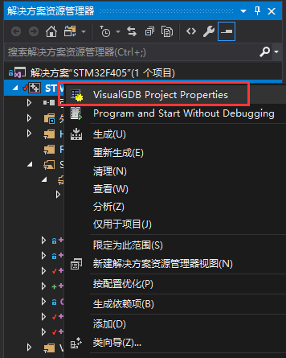
查看Debug settings，选择OpenOCD并下载。
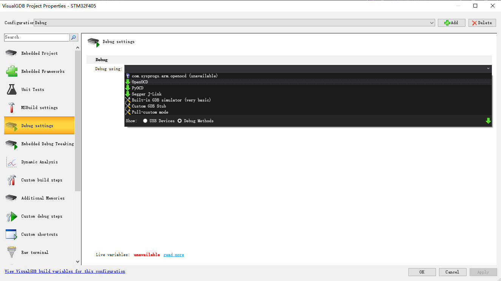
下载完毕后，在SWD programmer内选择ST-Link v2：（v2还是其它需视情况而定）
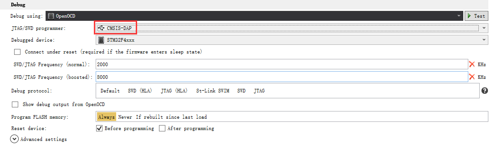
点击Debug using后面的Test，如果看到如下提示，说明一切正常。

回到项目中，按Ctrl+F5即可烧录程序。
若按上述操作无果，需要手动选择STN32 Devices 下载。
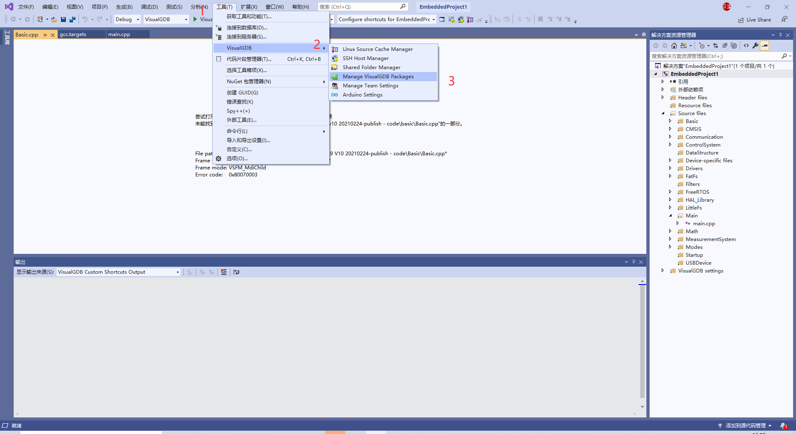
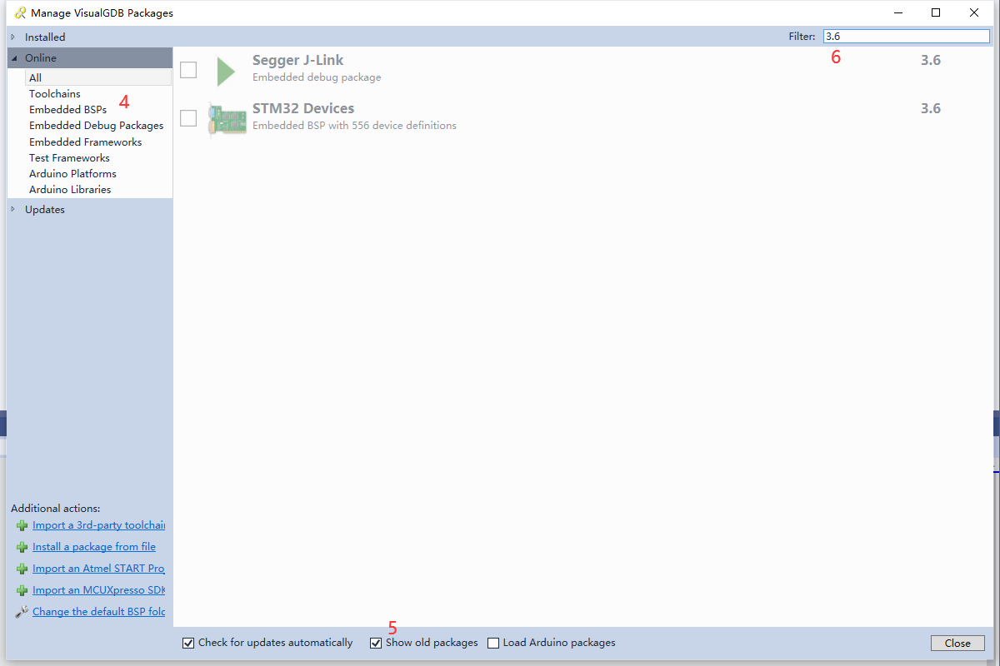

VisualGDB的优点
VisualGDB提供了强大的调试功能，并且可以利用Visual Studio原本的Intellisense等代码编辑工具，最有价值的是使用Live Variables实时观察变量，并且可以观察数据曲线：
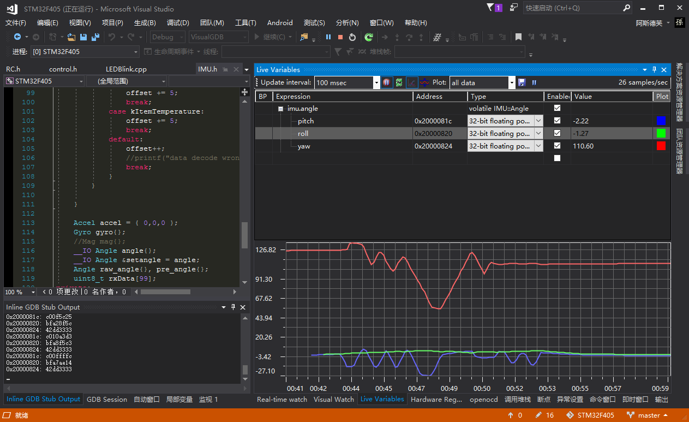
另外一个是调用堆栈。当程序进入错误中断时最有用，通过观察堆栈信息即可找到直接导致错误的位置，这是目前Keil无法取代的功能。